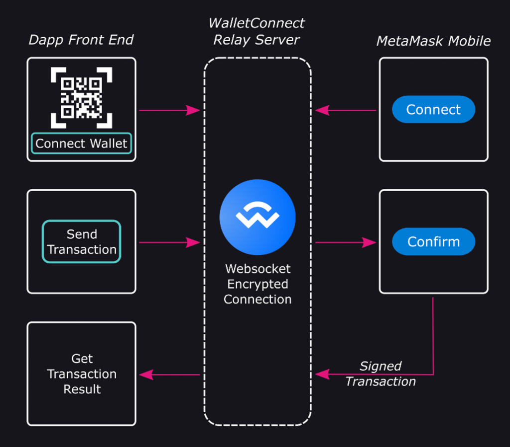
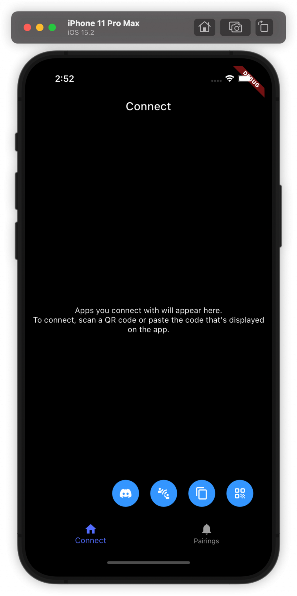

今天我們會深入介紹 Wallet Connect 協議以及在 Wallet App 中的實作。在 Day 6 的實作中已經完成了 DApp 端的 Wallet Connect 整合，而這還需要錢包端有支援 Wallet Connect 才能把完整的流程串起來。
由於 Wallet Connect 是希望使用者在不同裝置上也能方便連接錢包的協議，最常見的情況是手機上的錢包 App 可以連接電腦上的 DApp 並執行任何錢包操作。在 Day 16 我們提過 Ethereum Wallet Provider 的概念，本質上 Wallet Connect 協議就是實作了一個「位在遠端的 Wallet Provider」來處理各種 JSON RPC methods。至於中間如何把 DApp 端跟錢包端連接起來，靠的就是他們的 Relay Server，如下圖所示：

所有從 DApp 發起的錢包操作請求都會透過 Web Socket 透過 Wallet Connect Relay Server 傳到錢包端，當使用者在錢包中確認或拒絕後再把結果用一樣的方式傳回 DApp 端。過程中會透過加密傳輸來確保通訊不被監聽。
Wallet Connect 在今年六月正式從 V1 升級到 V2，最大的亮點是從原本只支援 EVM 鏈的連接與簽名，到 V2 也可以支援所有 EVM 以外的鏈（Polkadot, Cosmos 等等），讓介面變得更抽象化。
Wallet Connect 背後定義了一個標準流程來連接 DApp 與錢包端，也就是 Wallet Connect 提供的 Sign API 標準。首先在 DApp 端產生的 QR Code 會包含如下的網址：
[code] uri = “wc:7f6e504bfad60b485450578e05678ed3e8e8c4751d3c6160be17160d63ec90f9@2?symKey=587d5484ce2a2a6ee3ba1962fdd7e8588e06200c46823bd18fbd67def96ad303&methods=[wc_sessionPropose],[wc_authRequest,wc_authBatchRequest]&relay-protocol=irn”
[/code]
裡面是由以下欄位組成：
[code] topic = “7f6e504bfad60b485450578e05678ed3e8e8c4751d3c6160be17160d63ec90f9” version = 2 symKey = “587d5484ce2a2a6ee3ba1962fdd7e8588e06200c46823bd18fbd67def96ad303” methods = [wc_sessionPropose],[wc_authRequest,wc_authBatchRequest] relay = { protocol: “irn”, data: “” }
[/code]
其中 topic 代表兩端在做 Web Socket 通訊時要對哪個 topic
收發訊息， version 代表 Wallet Connect
協議版本。symKey
代表兩邊通訊時要用的對稱加密金鑰，methods
是用來告知錢包端接下來會收到哪些類型的請求，可以看到他自己定義了幾個我們沒看過的
JSON RPC method 作為特殊用途。relay 是 DApp
跟錢包端要透過哪個 Relay Server 進行通訊。
錢包掃描到這個 QR Code 後，會跳一個彈窗詢問用戶是否願意連接該 DApp，如果願意的話錢包就會跟 DApp 做 Pairing 來建立一個可以長達三十天的連線（每個 pairing 是由 tpoic 區分的），這樣就可以方便 DApp 跟錢包在一段比較長的時間重複利用這個連線而不需要讓使用者重連。
Pairing 建立起來後，會由 DApp 端發出 Session Proposal 來跟錢包建立可以收發資料的 Session，當錢包端同意後 DApp 就可以發 JSON RPC request 給錢包來取得地址、簽章等資料。在官方的 Reference Client API 文件可以看到一個 Wallet Connect Client 會有的介面（截取部分）：
[code] // initializes the client with persisted storage and a network
connection public abstract init(params: { metadata?: AppMetadata; }):
Promise
// for proposer to create a session
public abstract connect(params: {
requiredNamespaces: Map<string, ProposalNamespace>;
relays?: RelayProtocolOptions[];
pairingTopic: string;
}): Promise<Sequence>;
// for responder to approve a session proposal
public abstract approveSession(params: {
id: number;
namespaces: Map<string, SessionNamespace>; // optional
relayProtocol?: string;
}): Promise<Sequence>;
// for proposer to request JSON-RPC request
public abstract request(params: {
topic: string;
request: RequestArguments;
chainId: string;
}): Promise<any>;[/code]
值得一提的是 Pairing 機制也是 Wallet Connect V2 才加入的，因為在 V1 中只有 Session 的概念，導致錢包跟 DApp 建立連線後如果錢包沒收到 Session Proposal 或任一方斷線，就必須用新的 QR Code 重建一次 Session，導致使用者常常需要重掃 QR Code。有了 Pairing 的概念後使用者只要掃一次 QR Code 就可以讓 Wallet Connect SDK 自動管理 Session 的重連。
至於錢包跟 DApp 溝通中間經過的 Relay，目前預設是用 Wallet Connect 官方自己的 Relay Server，雖然這聽起來有點中心化且沒有隱私，不過由於前面提到的對稱式加密機制，可以確保只有錢包跟 DApp 兩方可以解開正在傳遞的訊息，也就是 Relay Server 只看得到一串亂碼無法解出原始資料。另外如果想跑自己的 Relay Server，Wallet Connect 也有提供基本功能的 Relay 可以使用：https://github.com/WalletConnect/relay
前面提到 Wallet Connect V2 的一個亮點是也支援了 EVM 以外的鏈，他能做到這件事背後來自於 Namespace 的設計方式。當 Pairing 建立後 DApp 發送 Session Proposal 給錢包時，會包含如下的 Namespace 資訊：
[code] { “requiredNamespaces”: { “eip155”: { “methods”: [ “eth_sendTransaction”, “eth_signTransaction”, “eth_sign”, “personal_sign”, “eth_signTypedData” ], “chains”: [“eip155:1”, “eip155:10”], “events”: [“chainChanged”, “accountsChanged”] }, “solana”: { “methods”: [“solana_signTransaction”, “solana_signMessage”], “chains”: [“solana:4sGjMW1sUnHzSxGspuhpqLDx6wiyjNtZ”], “events”: [] }, “polkadot”: { “methods”: [“polkadot_signTransaction”, “polkadot_signMessage”], “chains”: [“polkadot:91b171bb158e2d3848fa23a9f1c25182”], “events”: [] } }, “optionalNamespaces”: { “eip155:42161”: { “methods”: [“eth_sendTransaction”, “eth_signTransaction”, “personal_sign”], “events”: [“accountsChanged”, “chainChanged”] } } }
[/code]
可以看到 EVM 鏈相關的 JSON RPC methods 被包含在一個 EIP-155 的 Namespace 中，也就是 EVM 鏈使用 Chain ID 來定義不同鏈的方式，其他非 EVM 的鏈（Solana, Polkadot 等等）也能定義自己的 Chain ID 和 JSON RPC Method，只要錢包端回應 Session Proposal 時說有支援這些鏈跟對應的 JSON RPC Method，就能成功建立連線。
Wallet Connect 官方提供了 Flutter
SDK 把建立連線跟管理 Session 的功能封裝起來，並在 repo
中提供對應的範例程式碼，接下來帶讀者看若整實作 Wallet Connect
的錢包端串接會用到哪些東西。也可以進到 example/wallet
後執行 flutter run --dart-define=PROJECT_ID=xxx 把他的範例
App 跑起來：

首先是建立一個 Web3Wallet 物件，需要給他錢包 App 的
metadata 以及在 Wallet Connect Cloud 上註冊後獲得的 Project ID：
[code] _web3Wallet = Web3Wallet( core: Core( projectId: DartDefines.projectId, ), metadata: const PairingMetadata( name: ‘Example Wallet’, description: ‘Example Wallet’, url: ‘https://walletconnect.com/’, icons: [‘https://walletconnect.com/walletconnect-logo.png’], ), );
[/code]
再來當使用者掃描 Wallet Connect 的 QR Code 時，會使用
web3Wallet.pair 來建立 Pairing：
[code] Future _onFoundUri(String? uri) async { if (uri != null) { try { final Uri uriData = Uri.parse(uri); await web3Wallet.pair( uri: uriData, ); } catch (e) { _invalidUriToast(); } } else { _invalidUriToast(); } }
[/code]
接下來要如何及時收到 Session Proposal 的資料呢？只要在初始化
Web3Wallet 後，把自己的處理 Event 的 handler 註冊給
Web3Wallet 即可：
[code] _web3Wallet!.core.pairing.onPairingInvalid.subscribe(_onPairingInvalid); _web3Wallet!.core.pairing.onPairingCreate.subscribe(_onPairingCreate); _web3Wallet!.pairings.onSync.subscribe(_onPairingsSync); _web3Wallet!.onSessionProposal.subscribe(_onSessionProposal); _web3Wallet!.onSessionProposalError.subscribe(_onSessionProposalError); _web3Wallet!.onSessionConnect.subscribe(_onSessionConnect);
[/code]
這樣當 DApp 端發出 Session Proposal 請求時，就會呼叫到
_onSessionProposal
在裡面跳出連接請求的彈窗，讓使用者選擇同意或拒絕請求，選擇後使用
Web3Wallet 的 approveSession() 或
rejectSession 方法來處理連線。成功後會再收到
onSessionConnect event：
[code] void _onSessionProposal(SessionProposalEvent? args) async { if (args != null) { final Widget w = WCRequestWidget( child: WCConnectionRequestWidget( wallet: _web3Wallet!, sessionProposal: WCSessionRequestModel( request: args.params, ), ), ); final bool? approved = await _bottomSheetHandler.queueBottomSheet( widget: w, ); if (approved != null && approved) { _web3Wallet!.approveSession( id: args.id, namespaces: args.params.generatedNamespaces!, ); } else { _web3Wallet!.rejectSession( id: args.id, reason: Errors.getSdkError( Errors.USER_REJECTED, ), ); } } }
void _onSessionConnect(SessionConnect? args) {
if (args != null) {
print(args);
sessions.value.add(args.session);
}
}[/code]
再來是要如何收到 Sign Transaction 或 Sign Message
的請求並回應。這一樣也是在初始化 Web3Wallet 時要把對應的
Event Handler 註冊進去，對應的邏輯是在 EVMService 中：
[code] final Web3Wallet wallet = _web3WalletService.getWeb3Wallet(); for (final String event in getEvents()) { wallet.registerEventEmitter(chainId: getChainId(), event: event); } wallet.registerRequestHandler( chainId: getChainId(), method: pSign, handler: personalSign, ); wallet.registerRequestHandler( chainId: getChainId(), method: eSign, handler: ethSign, ); wallet.registerRequestHandler( chainId: getChainId(), method: eSignTransaction, handler: ethSignTransaction, ); wallet.registerRequestHandler( chainId: getChainId(), method: eSendTransaction, handler: ethSignTransaction, ); wallet.registerRequestHandler( chainId: getChainId(), method: eSignTypedData, handler: ethSignTypedData, );
[/code]
這樣就可以在對應的處理函式（如
ethSignTransaction）中跳出給使用者的簽名請求，若使用者同意就可以自動把結果送回
DApp 了！
今天我們探討了 Wallet Connect V2 的原理以及介紹如何在 Flutter 中實作錢包端的連接。而 Wallet Connect 除了定義 Sign API 之外也有關於 Auth, Chat, Notify 的 API，像 Auth API 提供一個自動用錢包登入的協議，而不再需要讓使用者簽名一個 SIWE (Sign-In With Ethereum) 的訊息。Chat 則是實現錢包對錢包的 1-1 聊天功能。Notify 則是實現由 DApp 主動發推播通知給手機端的使用者的協議。有興趣的讀者可以再自行研究。明天我們會介紹另一個錢包 App 的重要功能是如何實作的，也就是 DApp Browser。